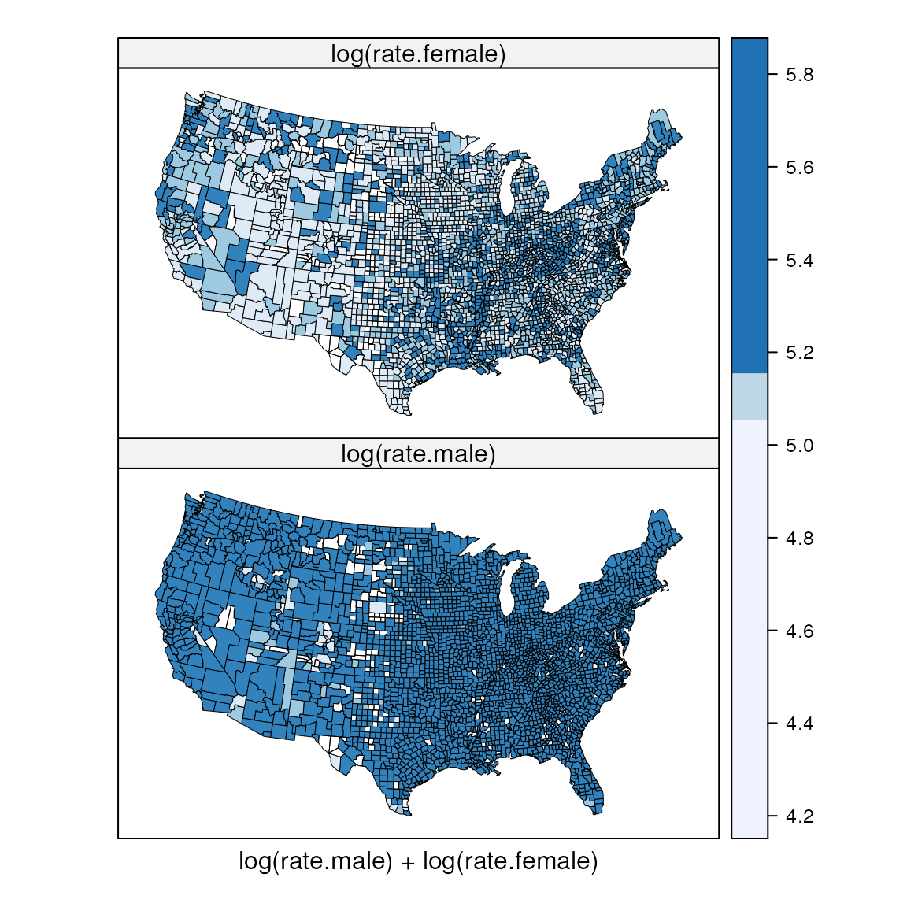

Bivariate choropleth maps
Kevin Wright
2024-01-01
Source:vignettes/bivariate_choropleths.Rmd
bivariate_choropleths.RmdR setup
library("knitr")
knitr::opts_chunk$set(fig.align="center", fig.width=6, fig.height=6)
options(width=90)Single-variate choropleth maps
The two maps below show male and female cancer rates on separate maps. The rates are coarsely binned into three classes so as to be somewhat comparable to the bivariate choropleth below.
require(latticeExtra) # USCancerRates, mapplot
require(maps) # map
require(classInt) # classIntervals, findCols
require(grid) # viewport, pushViewport
require(pals) # brewer.blues, stevens.pinkgreen
suppressWarnings(print(
mapplot(rownames(USCancerRates) ~ log(rate.male) + log(rate.female),
data = USCancerRates,
colramp = brewer.blues,
map = map("county", plot = FALSE, fill = TRUE,
projection = "tetra"),
breaks=classIntervals(log(USCancerRates$rate.female), n=3, style='quantile')$brks,
scales = list(draw = FALSE))
))
Comments on the single-variate choropleth maps
It is fairly easy to choose a color scheme (e.g. BrewerPal sequential colors).
It is fairly easy to interpret a single-variate map.
If two single-variate maps are drawn with a common scale for the variates (as shown here), the breakpoints for the colors might be suitable for one variate and less suited for the other variable. For example, the rates for females are high in West Virginia and the lower Mississippi River valley, but the breakpoints on the color scale do not allow for identification of similar features for males.
Bivariate color classes
Each variate is divided into thirds (based on percentiles) and a joint classification for all 9 combinations is defined.
cols <- stevens.pinkgreen; nbins <- 3
# categorize rates into 3 percentile bins
brksm <- classIntervals(log(USCancerRates$rate.male), n=nbins, style='quantile')## Warning in classIntervals(log(USCancerRates$rate.male), n = nbins, style = "quantile"):
## var has missing values, omitted in finding classes
brksf <- classIntervals(log(USCancerRates$rate.female), n=nbins, style='quantile')## Warning in classIntervals(log(USCancerRates$rate.female), n = nbins, style = "quantile"):
## var has missing values, omitted in finding classes
classm <- findCols(brksm)
classf <- findCols(brksf)
# convert x,y classes into a joint class x+3(y-1)
USCancerRates$class2 <- classm + nbins*(classf-1)
# scatterplot of two variates showing bins
plot(log(rate.female) ~ log(rate.male), data=USCancerRates,
col=cols()[USCancerRates$class2], pch=19,
xlim=c(4.5, 6.5), ylim=c(4.0, 6))
Bivariate choropleth maps
m3 <- mapplot(rownames(USCancerRates) ~ class2, data = USCancerRates,
colramp=cols, breaks=seq(from=0.5, by=1, length=nbins*nbins+1),
xlab="",
colorkey=FALSE,
map = map("county", plot = FALSE, fill = TRUE,
projection = "tetra"),
scales = list(draw = FALSE))
suppressWarnings(print( m3 ))
# add the color legend
m3leg <- levelplot(matrix(1:(nbins*nbins), nrow=nbins), axes=FALSE, col.regions=cols(),
xlab="male -->", ylab="female -->", cuts=8, colorkey=FALSE,
scales=list(draw=0))
vp <- viewport(x=.15, y=.25, width=.2, height=.2)
pushViewport(vp)
print(m3leg, newpage=FALSE)
popViewport()
# test
print(m3, more=TRUE)## Warning in (function (x, y, map, breaks, colramp, exact = FALSE, lwd = 0.5, : 65
## unmatched regions: alaska,nome, alaska,wade hampton, alaska,haines, alaska,....Comments on the bivariate choropleth map
Choosing a good color scheme requires some care. See Stevens (2015).
The single map is larger (than two single-variate choropleth maps), which makes it easier to see individual counties.
The larger map also reduces the relative amount of black ink to draw the county boundaries.
Because there are few bins for each variate, within-bin structure for individual variates could be overlooked.
In the example above, the rates of cancer are high for both men and women in West Virginia and the lower Mississippi River valley. South and east of that area, the counties are more green than blue, indicating a higher rate for men than for women.